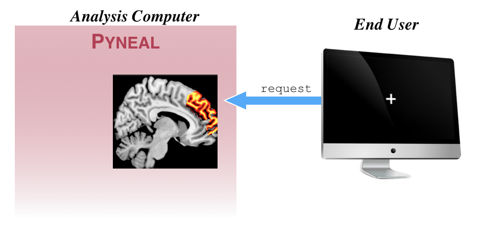
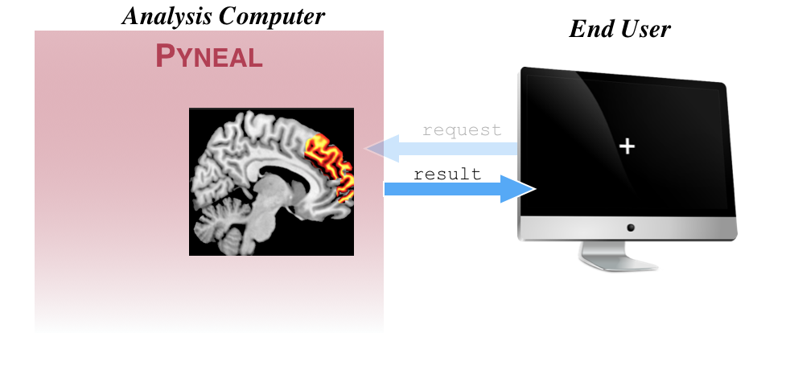

End User

We refer to any component that requests results from Pyneal during a scan as an End User. For instance, a potential End User could be task presentation software that periodically makes requests for analysis results in order to update a neurofeedback display for the participant.
Sending requests¶

Sending a request to Pyneal for the results from a specific volume simply requires you to establish a connection to Pyneal and send the index value of the volume you'd like to request (0-based index). The volume index should be formatted as a 4-character string, with zero-padded as needed. For instance, to request the results from the 9th volume (i.e. index 8), the request would be formatted as 0008.
Here is an example, written in python for how you might send a request for the 9th volume:
import socket
# socket configs
host = '127.0.0.1' # Pyneal address
port = 5556 # results server port number
# connect to the results server of Pyneal
clientSocket = socket.socket(socket.AF_INET, socket.SOCK_STREAM)
clientSocket.connect((host, port))
# format request for the 9th volume (index 8).
request = '0008'
# send the request
clientSocket.send(request.encode())
This approach can be incorporated into any End User application (e.g. an experimental task) to request specific results throughout a scan.
Parsing Responses¶

Continuing from the previous section, once the results server on Pyneal receives a request for volume index 0008, it will check to see if that volume has arrived and been analyzed yet.
-
If the volume has not arrived, the response will be a JSON message that contains a single key:value pair:
"foundResults":False -
If the volume has arrived, the response will be a JSON message that contains the key:value pair
"foundResults":Trueas well all of the results key:value pairs for that volume. For instance, if the real-time analysis is set to compute the average activation with the selected mask, the response message for volume0008may look like{'foundResults': True, 'average':2432}. If you are using a custom analysis script that computes multiple results on each volume, all of those results will appear in the response message. For instance, if you have a custom analysis script that is computing the mean activation separately in 3 ROIs, the response message may look like{'foundResults': True, "roi1_average": 2149.81, "roi2_average": 2519.11, "roi3_average": 2543.61}
Since the length of the response message can vary depending on A) whether the results were found or not, and B) the number of results that are being returned, the response itself will get sent to the remote End User in 2 waves:
1) First, a header that simply reports the number of characters in the upcoming response message.
2) The response message itself.
This way, the End User can know precisely how many bytes to read from the socket connection.
For reference, here is the code that the results server uses to send responses:
def sendResults(self, connection, results):
"""
Format the results dict to a json string, and send results to the client.
Message will be sent in 2 waves: first a header indicating the msg length,
and then the message itself
"""
# format as json string and then convert to bytes
formattedMsg = json.dumps(results).encode()
# build then send header with info about msg length
hdr = '{:d}\n'.format(len(formattedMsg))
connection.send(hdr.encode())
# send results as formatted message
connection.sendall(formattedMsg)
self.logger.debug('Sent result: {}'.format(formattedMsg))